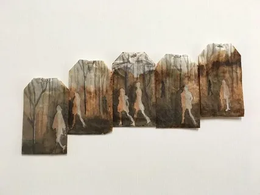
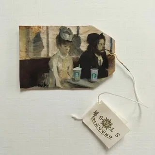

В нашем мире, полном стандартных решений, иногда простые вещи могут стать источником вдохновения и творчества. Ярким примером этого является американская художница и дизайнер Руби Сильвиус из Кокссеки, штат Нью-Йорк, которая превращает обычные использованные чайные пакетики в удивительные произведения искусства.

С 2015 года Руби ведет проект под названием “363 Days of Tea”, в рамках которого она создает уникальные рисунки на чайных пакетиках, используя их в качестве холста. Каждая работа отражает ее ежедневные истории, чувства и впечатления, создавая впечатляющий “визуальный дневник”. Эти работы она делится с миром через свой официальный сайт и социальные сети.
В 2016 году художница представила цикл “26 дней чая в Японии”, где использовала чернила, акварель и гуашь, чтобы запечатлеть атмосферу и красоту этой страны. Недавние работы Руби посвящены Парижу, где она продолжает исследовать и выражать свои эмоции через искусство.
Как отметила сама Сильвиус, «использованный чайный пакетик не очень привлекателен. Но там, где вы видите обычный чайный пакетик, я вижу пустой холст». Эта фраза подчеркивает ее способность находить красоту в обыденном и преображать его в нечто замечательное.
Руби надеется, что зрители ее работ смогут изменить свое восприятие искусства, возможно, даже обретя веру в его силу и значение. Ее творчество вдохновляет как любителей искусства, так и простых людей, напоминая нам о том, что даже в самых неожиданных местах можно найти вдохновение.
Мы в типографии ИПК Лазурь гордимся тем, что можем делиться такими историями, которые подчеркивают важность искусства и творчества в нашей жизни.